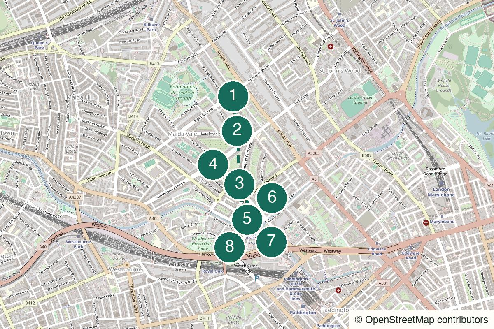

London Not yet field-walked
Rotherhithe
Warehouses, water and an old-room finish for a quieter stretch of the Thames.
Start Canada Water
Walked in person
Fireplaces, film locations and a little bit of Little Venice.
Walked in person by Slightly Elsewhere. The order of the rooms matters here: Prince Alfred for dinner, the far-left room at the Warwick Castle for the fireplace, then back into the dark for Little Venice and the small theatre upstairs. Live opening, fire, food and performance details can still change.
No field notes from readers yet — share one if you walk it.
Maida Vale Underground – Leave onto Elgin Avenue, but look back at the station before walking away.
Maida Vale Underground Station
Open the whole walk (opens in a new tab)
Use live walking directions at street crossings and check each venue before setting out. The route is paved and gentle, but Canal Cafe Theatre is reached by stairs and is not a step-free finish. Pub fires, kitchens, events and performance times are never guaranteed.
We never ask for your location.
Start with enough light to see why the houses are part of the walk: stucco fronts, crescents, tall windows and later red-brick mansion blocks. Then let Maida Vale alternate between polished residential history and rooms that are much more ornate than they need to be. Prince Alfred is the dinner, Warwick Castle is the fire, and neither needs to become a crawl. Outside again, Duffy, a green cabmen’s shelter and a few cultural footnotes carry the route to Little Venice. The water gives you ten quiet minutes before NewsRevue closes the evening upstairs. Paddington waits beyond it, large and practical.
Not a grand Little Venice tour and not three compulsory drinks in sequence. The pubs are here for their rooms, with alcohol entirely optional.
Particularly good for a date because the route supplies things to notice without demanding constant performance. Dinner is the only long commitment before the theatre.
Best with two to four people. Larger groups make the historic pub compartments and tiny theatre less convincing, and should book everything they can.
Works alone if the show is the anchor. The residential sections are calm rather than isolated, but keep normal evening awareness and a live map.
Optional first pause or wet-weather fallback
A Victorian room, stained glass and a marble fireplace make this a plausible early drink or shelter from rain. Keep it brief if Prince Alfred is the dinner stop. The venue advertises live music; check its current listings if an event or karaoke matters rather than relying on an old schedule.
Open this point (opens in a new tab)Check the current programme (opens in a new tab)
Starting early?
An old garden centre tucked behind residential streets, with a glasshouse and an unexpectedly enclosed atmosphere. It closes too early to belong to the default twilight route, so check the current time and use it only as an afternoon prelude.
Open this point (opens in a new tab)Check the current programme (opens in a new tab)

Elgin Avenue, London W9 1JS
From the start Begin outside the station. Look back at the tiled façade, then leave the main road for the quieter streets leading towards Lauderdale Road.
The early-20th-century Underground entrance already feels more decorative than it strictly needs to. Give it one glance, then let the houses take over; this is an opening note, not a transport-history lecture.
Walk here from the station to Maida Vale station – look back before leaving (opens in a new tab)Official information for Maida Vale station – look back before leaving (opens in a new tab)
Lauderdale Road and Ashworth Road, London W9
From the previous stop Use Elgin Avenue only as needed, then weave through the residential streets to Lauderdale Road and the synagogue before continuing towards Warrington Crescent.
Stucco villas, porticos, sash windows and later red-brick mansion blocks are the point of this section. The Spanish & Portuguese Synagogue is a brief architectural contrast. Somewhere among the Lauderdale Mansions, Alec Guinness entered the world long before becoming Obi-Wan Kenobi.
Walk from the previous stop to Lauderdale Road – architecture and two small footnotes (opens in a new tab)Official information for Lauderdale Road – architecture and two small footnotes (opens in a new tab)
2 Warrington Crescent, London W9 1ER
From the previous stop Continue south-west to Warrington Crescent and look for the blue plaque at number 2; remain on the pavement and treat it as a waypoint, not a gathering place.
One building on this very polished crescent has a less decorative claim to fame: Alan Turing was born here in 1912, when it was a nursing home. That contrast is enough; the route does not need his full biography.
Walk from the previous stop to Warrington Crescent – Alan Turing’s birthplace (opens in a new tab)Official information for Warrington Crescent – Alan Turing’s birthplace (opens in a new tab)
5A Formosa Street, London W9 1EE
From the previous stop Follow Warrington Crescent south and turn for Formosa Street. If dinner timing matters, arrive for the table you booked rather than trying to recover the schedule later.
If you want dinner on this route, this is the place to stop. Do not find a table immediately: first notice the separate drinking compartments, curved partitions, etched glass, woodwork and layered collection of pictures. It feels old because it is, not because somebody ordered a Victorian theme.
Walk from the previous stop to Prince Alfred – dinner, then look around (opens in a new tab)Official information for Prince Alfred – dinner, then look around (opens in a new tab)
6 Warwick Place, London W9 2PX
From the previous stop Walk south-east through the residential streets to Warwick Place. This is one atmospheric pause after dinner, not a second meal or a compulsory round.
Wood panelling, stained glass and the warm counterpoint to the darker streets outside. If the fire is on, try the room on the far left. Come for the room rather than the drinking; tea, a soft drink or simply keeping the stop short preserves the route’s shape.
Walk from the previous stop to The Warwick Castle – the room on the left (opens in a new tab)Official information for The Warwick Castle – the room on the left (opens in a new tab)
Warwick Avenue and Clifton Gardens, London W9
From the previous stop Continue to Warwick Avenue, passing the station area and aiming for the small green shelter near Clifton Gardens before turning towards the canal.
Duffy’s ‘Warwick Avenue’ is the obvious soundtrack here. Nearby St Saviour’s appears in The Human League’s ‘Love Action’ video; keep that as an Easter egg rather than a detour. The green hut is not a garden shed but an 1888 cabmen’s shelter, built so drivers could eat, rest and warm up without leaving their cabs far behind.
Walk from the previous stop to Warwick Avenue – one song and a green shelter (opens in a new tab)Official information for Warwick Avenue – one song and a green shelter (opens in a new tab)
The canal basin around Browning’s Pool, London W2
From the previous stop Walk south to the canal basin and take a short waterside loop rather than trying to cover every towpath. Keep the theatre time in hand.
Narrowboats, bridges and reflections briefly open the route after its enclosed pub rooms. The name is often associated with Robert Browning, who lived nearby, although the exact origin is disputed. The Paddington connection starts early too: Michael Bond lived by the canal here, and Little Venice later appeared in Paddington 2.
Walk from the previous stop to Little Venice – ten minutes of open water (opens in a new tab)Official information for Little Venice – ten minutes of open water (opens in a new tab)
Bridge House, Delamere Terrace, London W2 6ND
From the previous stop Leave the basin for Delamere Terrace and arrive with time to find the upstairs theatre. After the performance, use the separate Paddington finish directions rather than adding another stop.
NewsRevue has been satirising the week’s news since 1979. Its cast changes regularly and the topical material changes weekly, so this ending can be different even when the walk is repeated. Book the current performance through the theatre rather than planning around a copied show time.
Walk from the previous stop to Canal Cafe Theatre – NewsRevue (opens in a new tab)Official information for Canal Cafe Theatre – NewsRevue (opens in a new tab)
After NewsRevue: Walk directly to Paddington; do not add another venue
After the show, walk straight to Paddington. The sudden change from a tiny upstairs theatre to a major London station is the ending; it does not need another stop attached to it.
Open Paddington Station (opens in a new tab)Check the current service (opens in a new tab)
Dusk; especially good in autumn and winter
Prince Alfred is dinner. The Warrington is optional shelter or an early drink; Warwick Castle is one atmospheric room. None of the route depends on alcohol.
The intended full evening: architecture in the last light, Prince Alfred dinner, one fireplace pause, Little Venice and the booked show.
Keep the streets, one dinner and the canal, then walk from Little Venice to Paddington if NewsRevue is unavailable.
Rain is manageable because the indoor pauses are useful, though the canal section can be shortened. Use the Warrington only as a fallback and keep the theatre booking time visible.
Keep the NewsRevue ending and walk straight to Paddington afterwards. A route this carefully paced is not improved by searching for one more bar.
Warwick Avenue Underground is the clean early exit before the canal. Paddington is the practical finish if you skip the show after Little Venice.
This day sounds like: Duffy – Warwick Avenue
Help keep it useful
Closed gates, changed hours and the point where you bailed are more useful than polite applause.